Data centers are the backbone of the global digital economy — powering cloud computing, artificial intelligence, financial transactions, and critical communications. Yet they face an existential challenge: the power infrastructure that has sustained them for decades is no longer adequate for the demands of the AI era. Battery Energy Storage Systems (BESS) have emerged as a strategic response — not merely as a backup mechanism, but as a multifunctional power asset that delivers resilience, cost efficiency, grid integration, and sustainability. This article examines why BESS is fast becoming non-negotiable for modern data center operations.
The Power Crisis Facing Data Centers
The scale of data center power consumption is staggering and accelerating. AI data centers operate at rack-level power densities of 30–80 kW per rack — compared to the conventional 8–15 kW per rack in traditional deployments. According to Schneider Electric, AI rack densities are projected to reach 240 kW per rack in 2026, with research exploring densities of 1 MW per rack by 2028. This tenfold or greater increase in power intensity creates cascading stress on electrical distribution systems, cooling infrastructure, and the utility grid itself.
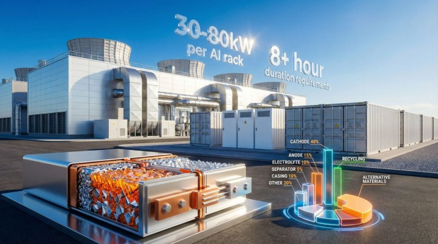
AI workloads also behave differently from conventional computing. Studies from NVIDIA , Microsoft , and OpenAI show that AI workloads generate significant power fluctuations — swinging from 30% to 100% of capacity — creating volatile demand patterns that traditional power systems were not designed to handle. Managing this "AI dynamic power" has rapidly become the second most cited driver of energy storage technology decisions in 2026, just behind cost.
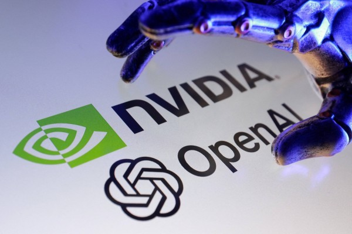
Meanwhile, grid interconnection queues for new data center projects now extend 4–8 years in many markets, pushing operators to think creatively about behind-the-meter power solutions. BESS fills this gap by providing on-site energy capacity that reduces grid dependence and enables faster deployment timelines.
The Cost of Not Having BESS: Downtime Economics
Before understanding what, BESS adds, it is worth quantifying what it protects against. Data center downtime is devastatingly expensive. According to the Uptime Institute , 70% of data center outage incidents cost $100,000 or more, with 25% costing more than $1 million. The proportion of outages crossing these thresholds has increased steadily as business dependence on digital infrastructure grows.
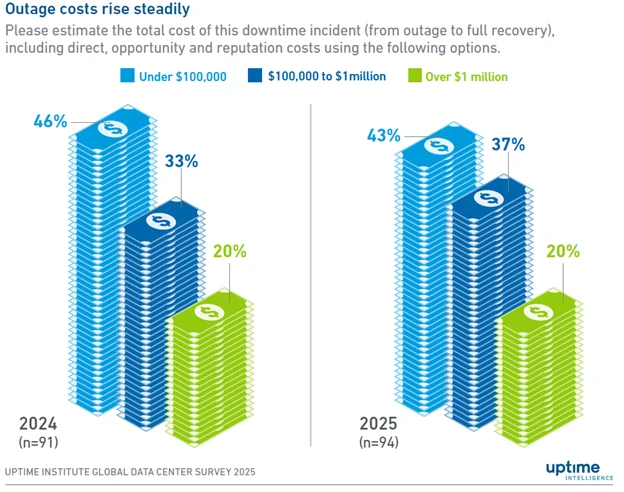
Power failures are the single largest cause of major outages. Uptime Institute research shows that power failures accounted for 36% of the biggest global public outages since January 2016. Of all power-related failures, 44% of data center outages are caused by onsite power system failure, with 40% of those traced back to UPS battery failure. When outages do occur at hyperscale operators, losses compound rapidly — Amazon lost an estimated $34 million, Facebook $100 million, and Alibaba $1 billion in revenue from single outage events in 2021.
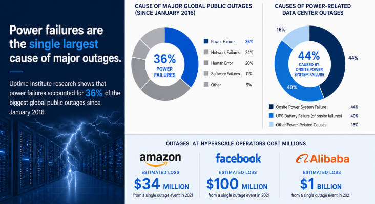
The reliability standards for modern Tier IV data centers are unforgiving — tolerating a maximum of just 0.8 hours of downtime annually. Against this backdrop, upgrading from legacy UPS to BESS is not a luxury but a business continuity imperative.
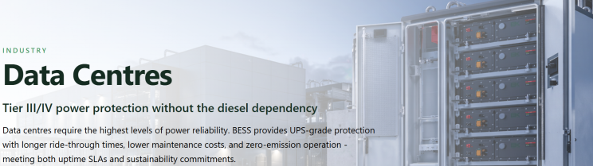
What BESS Brings to the Data Center: A Multi-Function Power Asset
1. Superior Backup Power — Beyond the 15-Minute Window
Traditional UPS systems provide approximately 5–15 minutes of backup power — just enough to bridge the gap until diesel generators spin up. BESS fundamentally changes the equation. A properly sized BESS can deliver 1–2 hours or more of backup energy, covering not just generator start-up but extended outages without diesel dependency.
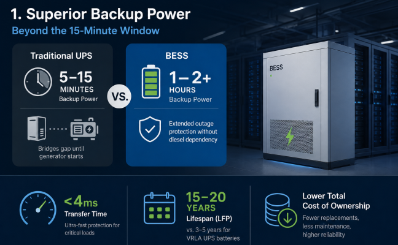
Crucially, BESS delivers this protection with a sub-4ms transfer time — matching or exceeding the response speed of the best UPS systems — while eliminating the risk of generator start-up failure, a leading cause of power-related outages. LFP (Lithium Iron Phosphate) batteries, the dominant chemistry in modern BESS, last 15–20 years compared to 3–5 years for traditional VRLA UPS batteries, dramatically reducing lifecycle costs and maintenance burden.
2. Peak Shaving and Demand Charge Reduction
Electricity tariffs for large industrial consumers are structured with both energy (kWh) and demand (kW) components. Demand charges — based on the highest 15-minute or 30-minute peak within a billing cycle — can account for 30–70% of a data center's monthly electricity bill. BESS attacks this cost directly.
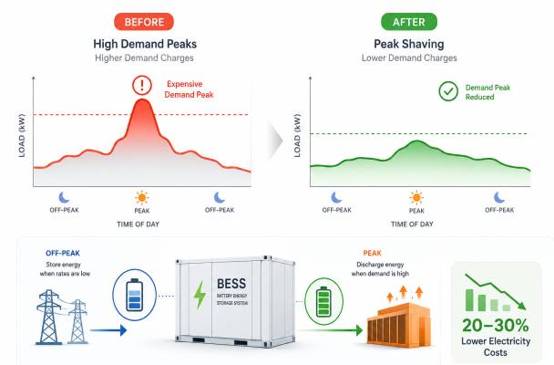
By storing energy during off-peak hours and discharging during high-demand periods, BESS flattens the load profile, suppresses demand peaks, and prevents costly demand charge spikes. This capability is especially valuable in AI data centers, where GPU clusters can create sudden, sharp load surges when compute jobs are dispatched. Operators who deploy BESS for peak shaving often achieve 20–30% reductions in electricity costs — a significant operational saving at the scale of hyperscale data centers.
3. Eliminating Diesel Generator Dependency
Diesel generators have been the standard backup power technology for data centers for decades. They are reliable, long-lasting, and capable of sustaining loads indefinitely — but they come with serious drawbacks. Generators require regular testing and maintenance, carry fuel storage and supply-chain risks, produce significant carbon and particulate emissions, and are increasingly incompatible with corporate sustainability commitments and local environmental regulations.
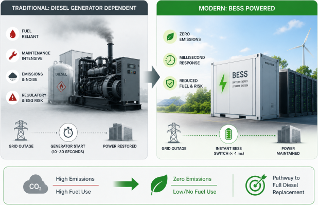
BESS offers a pathway to zero-emission backup power. For short to medium outages, BESS can serve as the primary backup — seamlessly transferring load within milliseconds, without starting a diesel engine. For longer outages, BESS acts as a buffer that buys time for generators to start and stabilize, significantly reducing generator run hours and fuel consumption. Several forward-looking data center operators are now piloting all-BESS backup architectures, using extended-duration systems to target full diesel replacement.
4. Renewable Energy Integration and 24/7 Clean Energy
Data centers have made ambitious sustainability commitments. Google, for instance, has committed to running on 24/7 carbon-free energy on every grid where it operates by 2030 and has signed contracts to purchase approximately 8 GW of clean energy generation in 2024 alone. Microsoft, Amazon, and other hyperscalers have made similar pledges. However, solar and wind energy are intermittent — they generate power only when the sun shines or the wind blows.
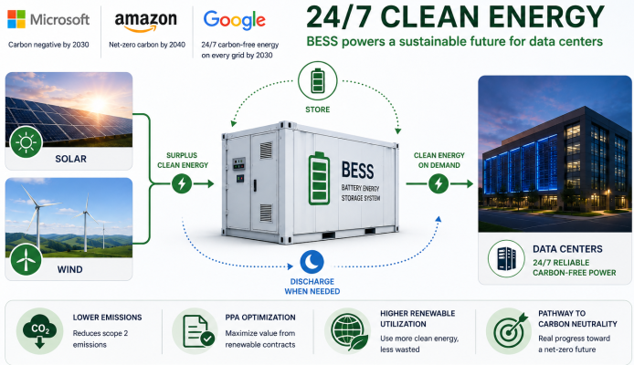
BESS is the enabler of 24/7 clean energy. By storing surplus solar or wind energy generated during peak production hours and discharging it during demand peaks or overnight, BESS allows data centers to achieve higher renewable energy utilization without sacrificing reliability. This directly reduces scope 2 emissions, supports Power Purchase Agreement (PPA) optimization, and provides a credible pathway toward genuine carbon neutrality rather than mere offset-based accounting.
5. Grid Services: From Cost Center to Revenue Generator
Perhaps the most underutilized opportunity for data center operators is deploying BESS to provide grid services. Because BESS can respond to frequency deviations and voltage fluctuations within milliseconds, it is ideally suited for:
- Frequency Regulation (FFR/AGC): Responding to grid frequency deviations to maintain 50/60 Hz stability.
- Spinning/Non-Spinning Reserve: Providing fast-response backup capacity to the grid operator.
- Demand Response: Curtailing or shifting load during grid stress events in exchange for incentive payments.
- Voltage Support: Reactive power compensation and voltage regulation at the grid interconnection point.
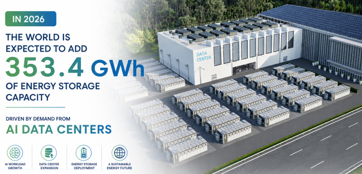
Through aggregation into Virtual Power Plant (VPP) networks, data centers with BESS can participate in wholesale electricity markets — dispatching stored energy or adjusting demand in response to real-time market signals. This transforms the data center from a passive electricity consumer into an active grid participant, generating ancillary service revenues that partially or fully offset BESS capital costs. Co-located BESS systems are increasingly seen as pivotal for grid frequency regulation as AI data center power demand scales globally.
The AI Inflection Point: Why Now Is Critical
The urgency around BESS adoption has accelerated sharply with the rise of AI infrastructure. Global BESS shipments surged 75.5% to 421.2 GWh in 2025, with 600 GWh projected for 2026 — a significant share driven by AI data center demand. The global energy storage market for AI data centers specifically is projected to reach $4.1–6.0 billion in annual revenue by 2030, growing at a CAGR of 28–38% from approximately $1 billion in 2025.
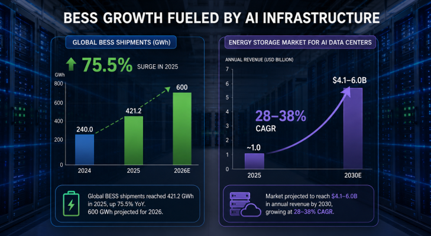
The ZincFive, Inc. 2026 Data Center Energy Storage Industry Insights Report, developed with Endeavor Business Intelligence, captures this inflection clearly: 57% of data center professionals report AI workloads are driving higher power density requirements, while 52% highlight the need to manage AI dynamic power and maintain power quality — up significantly from 37% in 2025. AI dynamic power management has entered the top two drivers of energy storage technology decisions, introduced for the first time in 2026.
Traditional data center power architectures were built for predictable, steady-state loads. AI inference clusters and training farms operate at maximum intensity for sustained periods, then drop to idle — creating violent load swings that stress transformers, switchgear, and UPS systems. BESS acts as a buffer and stabilizer, absorbing these transients and protecting both the facility infrastructure and the upstream utility grid.
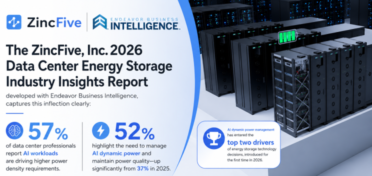
Economic and Sustainability Case: Total Cost of Ownership
When evaluating BESS against traditional alternatives, the total cost of ownership (TCO) picture is increasingly favorable. 84% of data center professionals cite TCO as a top priority when selecting energy storage solutions. The TCO calculation must account for:
- Capital cost: BESS has higher upfront cost than traditional UPS+generator but lower than building out additional grid capacity
- Operating cost: LFP batteries last 15–20 years vs. 3–5 years for VRLA; diesel maintenance, testing, and fuel costs are eliminated
- Revenue offsets: Grid services, demand response, and capacity market revenues partially or fully offset BESS capex over time
- Risk mitigation: Avoided downtime costs, compliance with Tier III/IV reliability standards, and protection against demand charge spikes
- Sustainability value: Alignment with ESG mandates, RE100 commitments, and carbon-neutral goals increasingly influences customer selection, investor ratings, and regulatory approvals
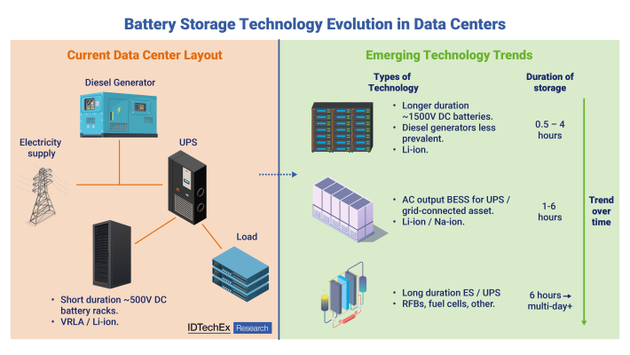
The 2025 IDTechEx market report "Battery Storage for Data Centers, Commercial & Industrial Applications 2026–2036" forecasts the commercial and industrial BESS market — of which data centers are a major segment — to reach USD 21 billion in value by 2036.
Enterprise Case Studies
The transition to BESS is already being led by the world's largest digital infrastructure providers, whose projects serve as templates for the broader industry.
Microsoft: The Dublin Grid-Interactive UPS Project
In collaboration with Enel X and Eaton , Microsoft has transformed its Dublin, Ireland, data center into a grid-stabilizing asset. By utilizing grid-interactive UPS (GiUPS) technology, Microsoft’s lithium-ion batteries do more than just provide backup power. They are programmed to respond to frequency deviations on the Irish grid within 80 milliseconds. In a region where wind energy can provide up to 80% of total power, the grid is highly sensitive to fluctuations. Microsofts batteries provide the necessary inertia to stabilize the system, displacing the need for fossil-fuel-burning spinning reserves. This project has demonstrated that data centers can be good citizens of the grid while also improving their own TCO through ancillary service payments.
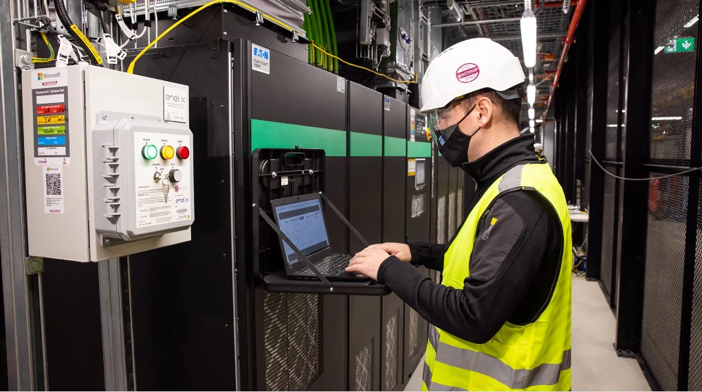
Google: Diesel Replacement in St. Ghislain
Google’s data center campus in St. Ghislain, Belgium, features a first-of-its-kind 2.75 MW / 5.5 MWh BESS developed by Fluence . This installation is a primary proof-of-concept for Google’s global goal to operate on 24/7 carbon-free energy by 2030. The BESS is managed as a virtual power plant (VPP) by Centrica , allowing it to store excess energy from on-site solar and discharge it to the Belgian grid to maintain balance. This project highlights how BESS can mitigate the intermittency penalty of renewable energy, ensuring that a facility remains powered by green electrons even when the sun is not shining.
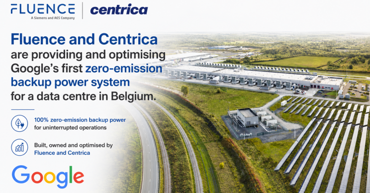
Oracle and the Buffer for AI Load Swings
Oracle Cloud Infrastructure (OCI) has begun adding BESS to multiple data centers specifically to handle the massive power swings produced by AI clusters. As Ram Nagappan , VP of AI Infrastructure at Oracle, noted, traditional grid infrastructure cannot cope with power fluctuations that happen several times per second. OCI uses BESS as a high-speed buffer to dampen these swings, protecting the upstream utility transformers from thermal fatigue and ensuring that the high-density GPU racks receive consistent, clean power.
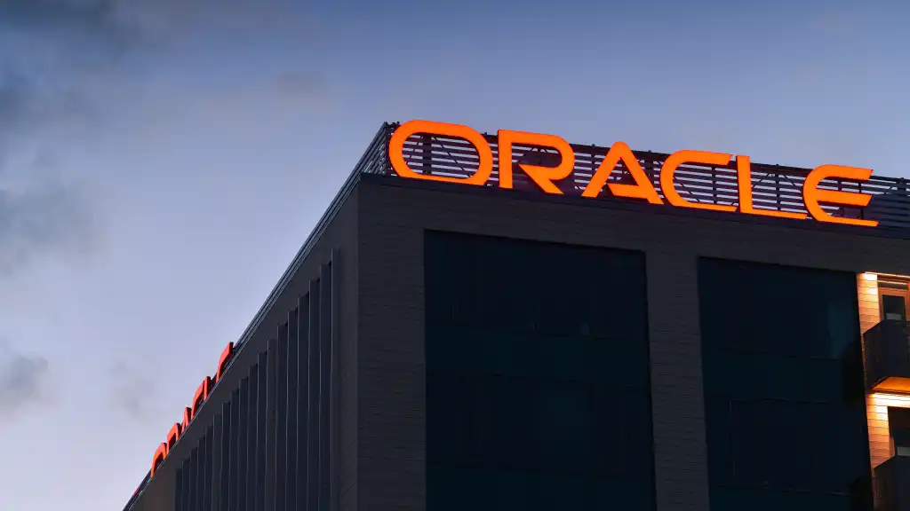
Challenges and Considerations
While the case for BESS is compelling, data center operators must navigate several implementation challenges:
- Runtime limitations: For extended outages, BESS cannot match the indefinite runtime of diesel generators (as long as fuel is supplied). Hybrid BESS-generator configurations remain the practical architecture for most Tier III/IV facilities targeting 12–48-hour backup autonomy.
- Safety and fire risk: Lithium-ion battery fires, while rare, are a serious concern in enclosed data center environments. Cell-level fire suppression systems, deflagration panels, thermal runaway detection, and proper separation distances are essential design requirements.
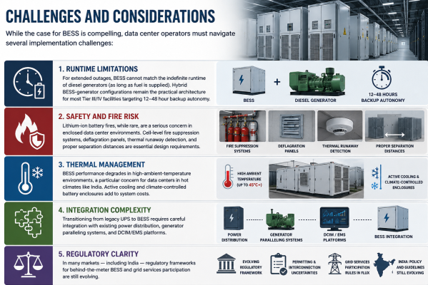
- Thermal management: BESS performance degrades in high-ambient-temperature environments, a particular concern for data centers in hot climates like India. Active cooling and climate-controlled battery enclosures add to system costs.
- Integration complexity: Transitioning from legacy UPS to BESS requires careful integration with existing power distribution, generator paralleling systems, and DCIM/EMS platforms.
- Regulatory clarity: In many markets — including India — regulatory frameworks for behind-the-meter BESS and grid services participation are still evolving.
The Road Ahead: From Backup Device to Strategic Infrastructure
The trajectory is clear: BESS is moving from the margins of data center power planning to its center. Global energy storage installations surged 61.3% to 275.3 GWh in 2025, with 353.4 GWh of additional capacity expected in 2026 — driven significantly by data center demand. As AI workloads scale from 30 kW racks to 100+ kW and beyond, as grid interconnection timelines lengthen, as sustainability mandates tighten, and as electricity market mechanisms mature, the value proposition of BESS grows stronger on every dimension.
Data centers that deploy BESS today gain a multifunctional asset: a resilience tool, a cost optimizer, a sustainability enabler, and a revenue generator. Those that delay risk not just higher energy costs and operational vulnerability — but the inability to attract hyperscale tenants, meet regulatory requirements, and compete in an era when power infrastructure is the new competitive moat.
BESS is not the future of data center power. It is the present.